2023 Higher Biology - Paper 2 marking instructions
Source: Scottish Qualifications Authority (SQA) / Qualifications Scotland. This is a StemInteract HTML companion, not an official HTML edition. Selectable text is supplied alongside original page images. Use the images or original PDF for equations, powers, fractions, vector notation, tables and diagrams; text extraction cannot fully preserve mathematical layout.
Jump to a question
PDF page 1
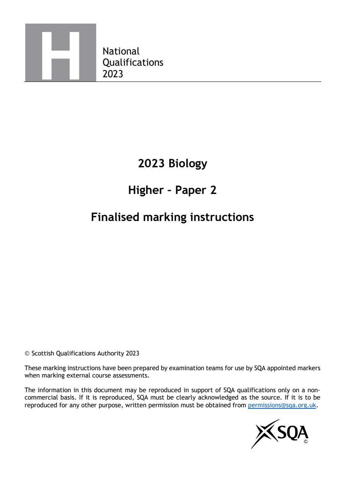
Selectable page text
National
Qualifications
2023
2023 Biology
Higher – Paper 2
Finalised marking instructions
Scottish Qualifications Authority 2023
These marking instructions have been prepared by examination teams for use by SQA appointed markers
when marking external course assessments.
The information in this document may be reproduced in support of SQA qualifications only on a non-
commercial basis. If it is reproduced, SQA must be clearly acknowledged as the source. If it is to be
reproduced for any other purpose, written permission must be obtained from permissions@sqa.org.uk.
©PDF page 2
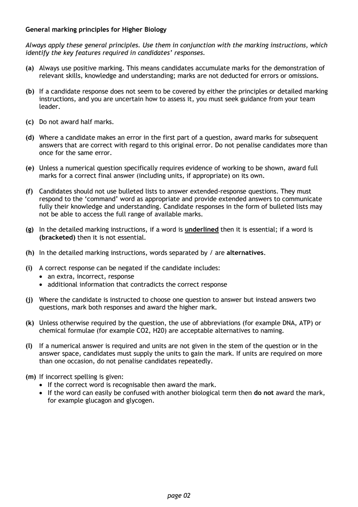
Selectable page text
General marking principles for Higher Biology
Always apply these general principles. Use them in conjunction with the marking instructions, which
identify the key features required in candidates’ responses.
(a) Always use positive marking. This means candidates accumulate marks for the demonstration of
relevant skills, knowledge and understanding; marks are not deducted for errors or omissions.
(b) If a candidate response does not seem to be covered by either the principles or detailed marking
instructions, and you are uncertain how to assess it, you must seek guidance from your team
leader.
(c) Do not award half marks.
(d) Where a candidate makes an error in the first part of a question, award marks for subsequent
answers that are correct with regard to this original error. Do not penalise candidates more than
once for the same error.
(e) Unless a numerical question specifically requires evidence of working to be shown, award full
marks for a correct final answer (including units, if appropriate) on its own.
(f) Candidates should not use bulleted lists to answer extended-response questions. They must
respond to the ‘command’ word as appropriate and provide extended answers to communicate
fully their knowledge and understanding. Candidate responses in the form of bulleted lists may
not be able to access the full range of available marks.
(g) In the detailed marking instructions, if a word is underlined then it is essential; if a word is
(bracketed) then it is not essential.
(h) In the detailed marking instructions, words separated by / are alternatives.
(i) A correct response can be negated if the candidate includes:
• an extra, incorrect, response
• additional information that contradicts the correct response
(j) Where the candidate is instructed to choose one question to answer but instead answers two
questions, mark both responses and award the higher mark.
(k) Unless otherwise required by the question, the use of abbreviations (for example DNA, ATP) or
chemical formulae (for example CO2, H20) are acceptable alternatives to naming.
(l) If a numerical answer is required and units are not given in the stem of the question or in the
answer space, candidates must supply the units to gain the mark. If units are required on more
than one occasion, do not penalise candidates repeatedly.
(m) If incorrect spelling is given:
• If the correct word is recognisable then award the mark.
• If the word can easily be confused with another biological term then do not award the mark,
for example glucagon and glycogen.
page 02PDF page 3
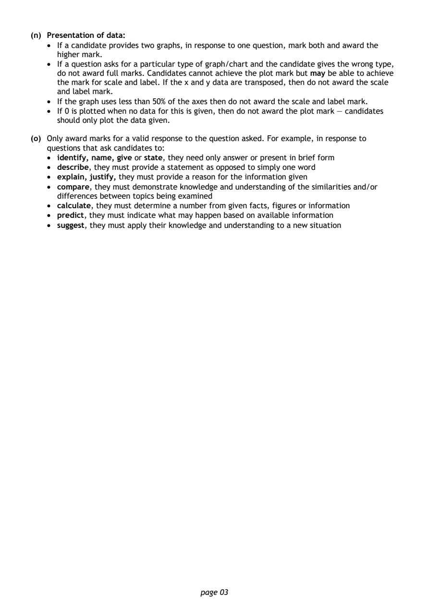
Selectable page text
(n) Presentation of data:
• If a candidate provides two graphs, in response to one question, mark both and award the
higher mark.
• If a question asks for a particular type of graph/chart and the candidate gives the wrong type,
do not award full marks. Candidates cannot achieve the plot mark but may be able to achieve
the mark for scale and label. If the x and y data are transposed, then do not award the scale
and label mark.
• If the graph uses less than 50% of the axes then do not award the scale and label mark.
• If 0 is plotted when no data for this is given, then do not award the plot mark — candidates
should only plot the data given.
(o) Only award marks for a valid response to the question asked. For example, in response to
questions that ask candidates to:
• identify, name, give or state, they need only answer or present in brief form
• describe, they must provide a statement as opposed to simply one word
• explain, justify, they must provide a reason for the information given
• compare, they must demonstrate knowledge and understanding of the similarities and/or
differences between topics being examined
• calculate, they must determine a number from given facts, figures or information
• predict, they must indicate what may happen based on available information
• suggest, they must apply their knowledge and understanding to a new situation
page 03PDF page 4
Paper 2, Question 1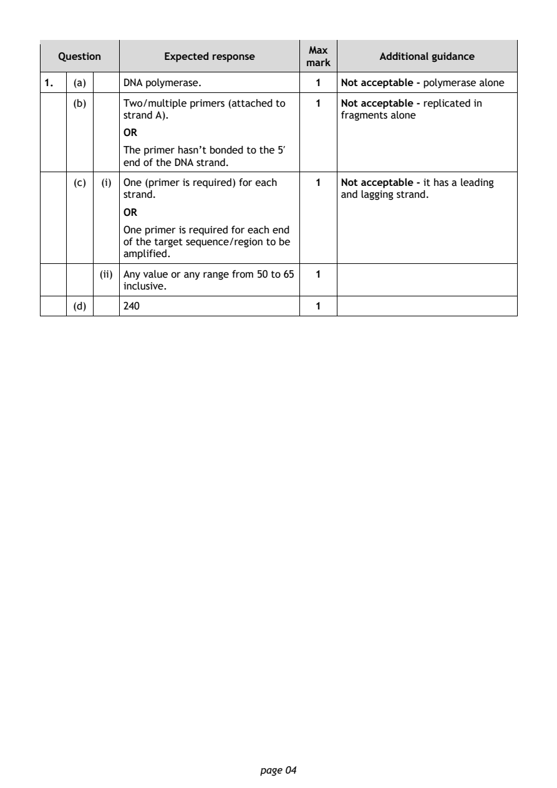
Selectable page text
Max
Question Expected response Additional guidance
mark
1. (a) DNA polymerase. 1 Not acceptable - polymerase alone
(b) Two/multiple primers (attached to 1 Not acceptable - replicated in
strand A). fragments alone
OR
The primer hasn’t bonded to the 5′
end of the DNA strand.
(c) (i) One (primer is required) for each 1 Not acceptable - it has a leading
strand. and lagging strand.
OR
One primer is required for each end
of the target sequence/region to be
amplified.
(ii) Any value or any range from 50 to 65 1
inclusive.
(d) 240 1
page 04PDF page 5
Paper 2, Question 2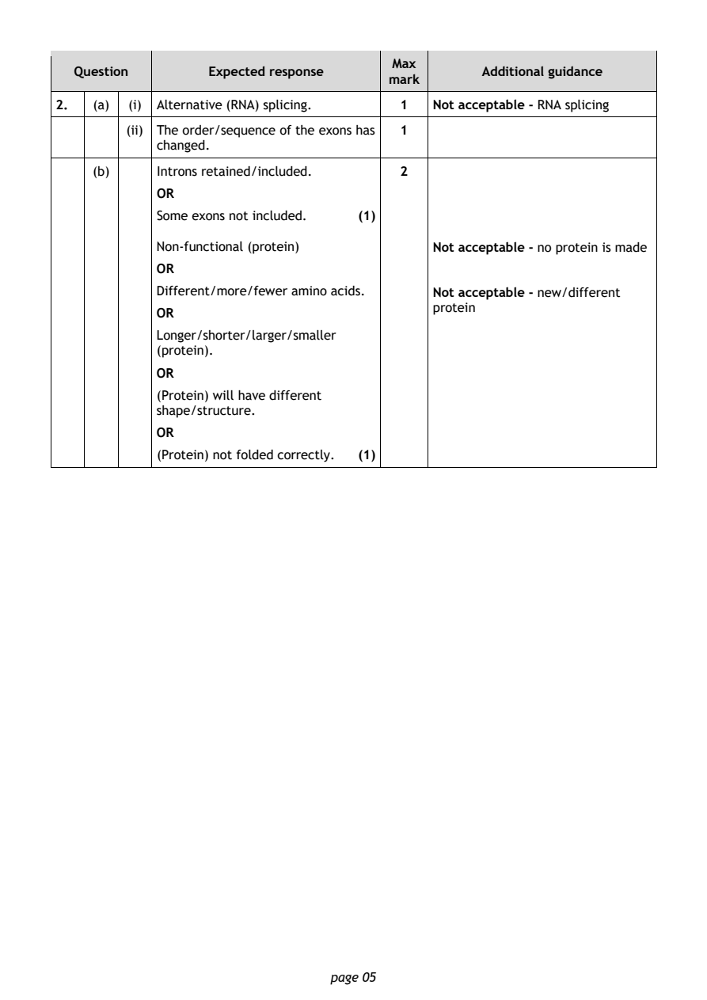
Selectable page text
Max
Question Expected response Additional guidance
mark
2. (a) (i) Alternative (RNA) splicing. 1 Not acceptable - RNA splicing
(ii) The order/sequence of the exons has 1
changed.
(b) Introns retained/included. 2
OR
Some exons not included. (1)
Non-functional (protein) Not acceptable - no protein is made
OR
Different/more/fewer amino acids. Not acceptable - new/different
protein
OR
Longer/shorter/larger/smaller
(protein).
OR
(Protein) will have different
shape/structure.
OR
(Protein) not folded correctly. (1)
page 05PDF page 6
Paper 2, Question 3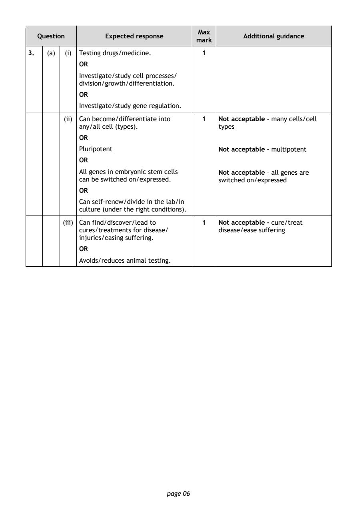
Selectable page text
Max
Question Expected response Additional guidance
mark
3. (a) (i) Testing drugs/medicine. 1
OR
Investigate/study cell processes/
division/growth/differentiation.
OR
Investigate/study gene regulation.
(ii) Can become/differentiate into 1 Not acceptable - many cells/cell
any/all cell (types). types
OR
Pluripotent Not acceptable - multipotent
OR
All genes in embryonic stem cells Not acceptable – all genes are
can be switched on/expressed. switched on/expressed
OR
Can self-renew/divide in the lab/in
culture (under the right conditions).
(iii) Can find/discover/lead to 1 Not acceptable - cure/treat
cures/treatments for disease/ disease/ease suffering
injuries/easing suffering.
OR
Avoids/reduces animal testing.
page 06PDF page 7
Paper 2, Question 4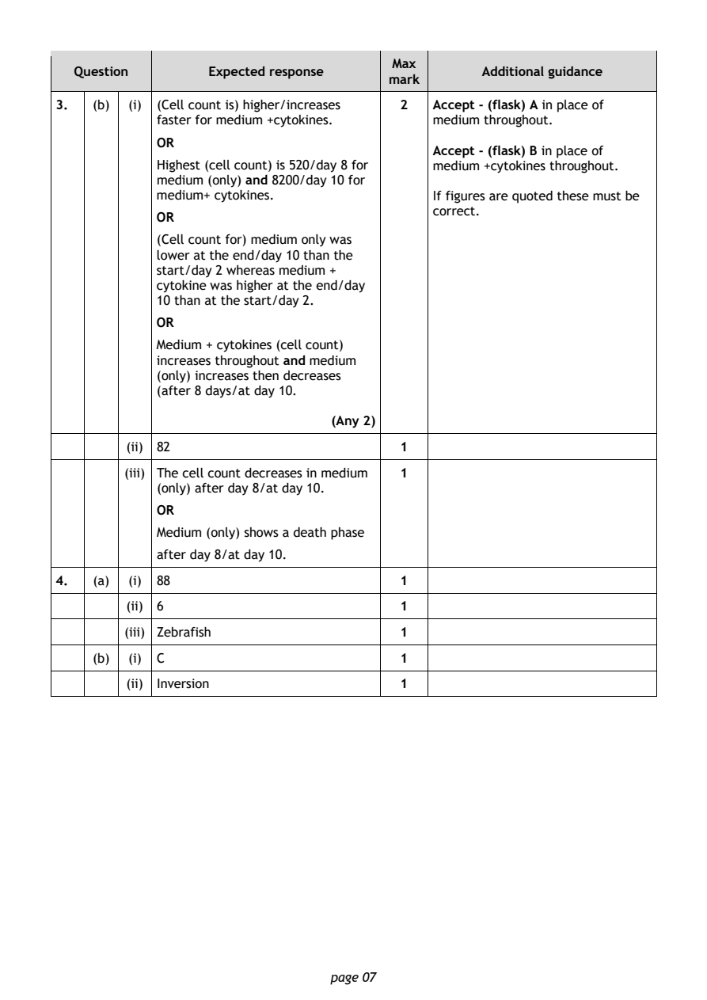
Selectable page text
Max
Question Expected response Additional guidance
mark
3. (b) (i) (Cell count is) higher/increases 2 Accept - (flask) A in place of
faster for medium +cytokines. medium throughout.
OR
Accept - (flask) B in place of
Highest (cell count) is 520/day 8 for medium +cytokines throughout.
medium (only) and 8200/day 10 for
medium+ cytokines. If figures are quoted these must be
correct.
OR
(Cell count for) medium only was
lower at the end/day 10 than the
start/day 2 whereas medium +
cytokine was higher at the end/day
10 than at the start/day 2.
OR
Medium + cytokines (cell count)
increases throughout and medium
(only) increases then decreases
(after 8 days/at day 10.
(Any 2)
(ii) 82 1
(iii) The cell count decreases in medium 1
(only) after day 8/at day 10.
OR
Medium (only) shows a death phase
after day 8/at day 10.
4. (a) (i) 88 1
(ii) 6 1
(iii) Zebrafish 1
(b) (i) C 1
(ii) Inversion 1
page 07PDF page 8
Paper 2, Question 5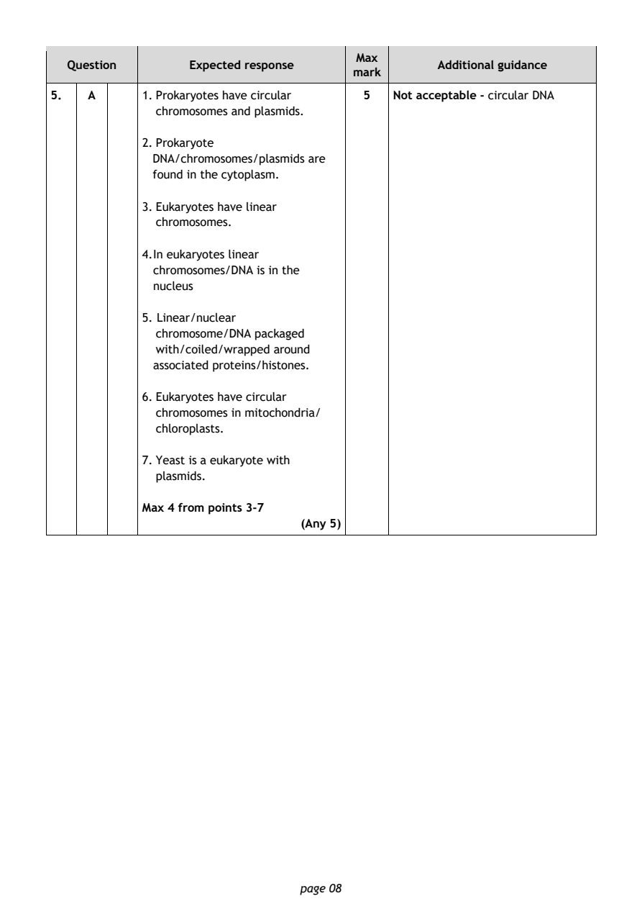
Selectable page text
Max
Question Expected response Additional guidance
mark
5. A 1. Prokaryotes have circular 5 Not acceptable - circular DNA
chromosomes and plasmids.
2. Prokaryote
DNA/chromosomes/plasmids are
found in the cytoplasm.
3. Eukaryotes have linear
chromosomes.
4. In eukaryotes linear
chromosomes/DNA is in the
nucleus
5. Linear/nuclear
chromosome/DNA packaged
with/coiled/wrapped around
associated proteins/histones.
6. Eukaryotes have circular
chromosomes in mitochondria/
chloroplasts.
7. Yeast is a eukaryote with
plasmids.
Max 4 from points 3-7
(Any 5)
page 08PDF page 9
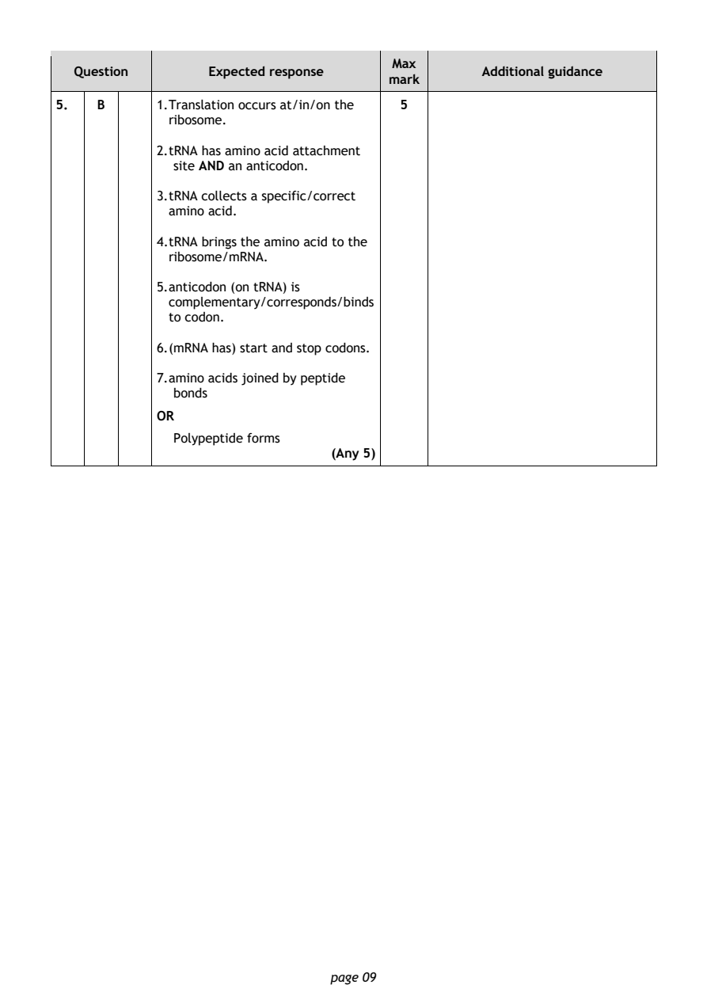
Selectable page text
Max
Question Expected response Additional guidance
mark
5. B 1. Translation occurs at/in/on the 5
ribosome.
2. tRNA has amino acid attachment
site AND an anticodon.
3. tRNA collects a specific/correct
amino acid.
4. tRNA brings the amino acid to the
ribosome/mRNA.
5. anticodon (on tRNA) is
complementary/corresponds/binds
to codon.
6. (mRNA has) start and stop codons.
7. amino acids joined by peptide
bonds
OR
Polypeptide forms
(Any 5)
page 09PDF page 10
Paper 2, Question 6Paper 2, Question 7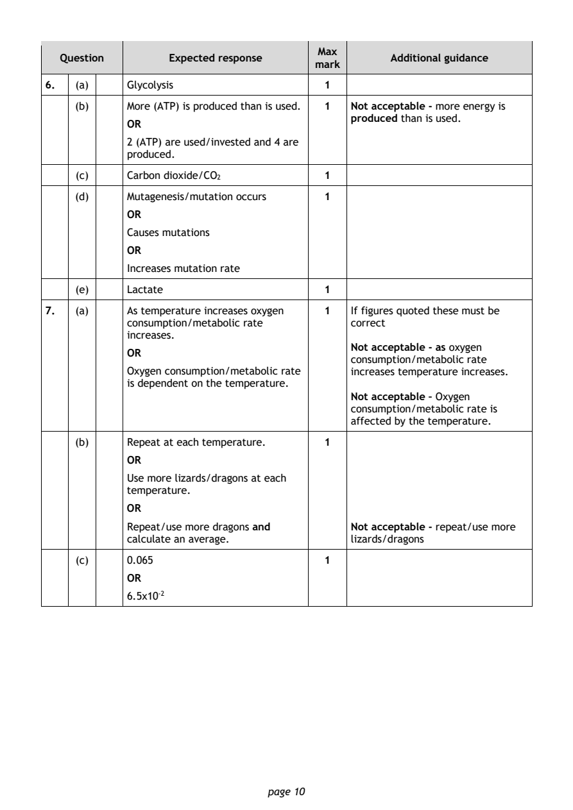
Selectable page text
Max
Question Expected response Additional guidance
mark
6. (a) Glycolysis 1
(b) More (ATP) is produced than is used. 1 Not acceptable - more energy is
produced than is used.
OR
2 (ATP) are used/invested and 4 are
produced.
(c) Carbon dioxide/CO 1
2
(d) Mutagenesis/mutation occurs 1
OR
Causes mutations
OR
Increases mutation rate
(e) Lactate 1
7. (a) As temperature increases oxygen 1 If figures quoted these must be
consumption/metabolic rate correct
increases.
Not acceptable - as oxygen
OR
consumption/metabolic rate
Oxygen consumption/metabolic rate increases temperature increases.
is dependent on the temperature.
Not acceptable – Oxygen
consumption/metabolic rate is
affected by the temperature.
(b) Repeat at each temperature. 1
OR
Use more lizards/dragons at each
temperature.
OR
Repeat/use more dragons and Not acceptable - repeat/use more
calculate an average. lizards/dragons
(c) 0.065 1
OR
6.5x10⁻²
page 10PDF page 11
Paper 2, Question 8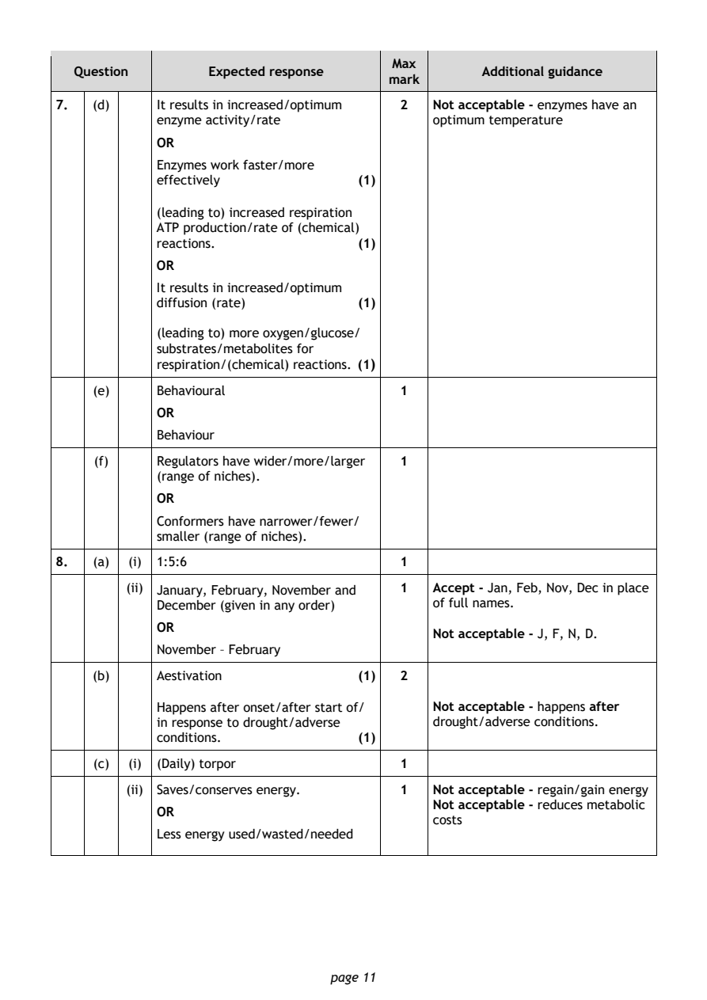
Selectable page text
Max
Question Expected response Additional guidance
mark
7. (d) It results in increased/optimum 2 Not acceptable - enzymes have an
enzyme activity/rate optimum temperature
OR
Enzymes work faster/more
effectively (1)
(leading to) increased respiration
ATP production/rate of (chemical)
reactions. (1)
OR
It results in increased/optimum
diffusion (rate) (1)
(leading to) more oxygen/glucose/
substrates/metabolites for
respiration/(chemical) reactions. (1)
(e) Behavioural 1
OR
Behaviour
(f) Regulators have wider/more/larger 1
(range of niches).
OR
Conformers have narrower/fewer/
smaller (range of niches).
8. (a) (i) 1:5:6 1
(ii) January, February, November and 1 Accept - Jan, Feb, Nov, Dec in place
December (given in any order) of full names.
OR
Not acceptable - J, F, N, D.
November – February
(b) Aestivation (1) 2
Happens after onset/after start of/ Not acceptable - happens after
in response to drought/adverse drought/adverse conditions.
conditions. (1)
(c) (i) (Daily) torpor 1
(ii) Saves/conserves energy. 1 Not acceptable - regain/gain energy
Not acceptable - reduces metabolic
OR
costs
Less energy used/wasted/needed
page 11PDF page 12
Paper 2, Question 9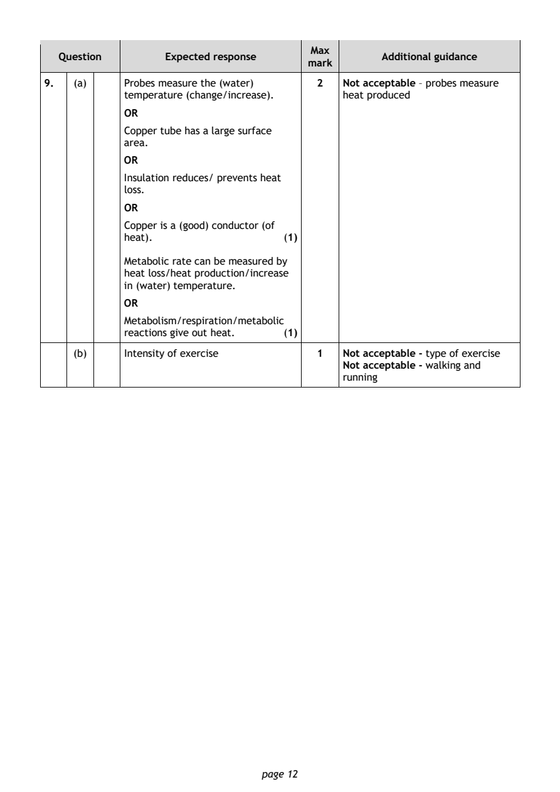
Selectable page text
Max
Question Expected response Additional guidance
mark
9. (a) Probes measure the (water) 2 Not acceptable – probes measure
temperature (change/increase). heat produced
OR
Copper tube has a large surface
area.
OR
Insulation reduces/ prevents heat
loss.
OR
Copper is a (good) conductor (of
heat). (1)
Metabolic rate can be measured by
heat loss/heat production/increase
in (water) temperature.
OR
Metabolism/respiration/metabolic
reactions give out heat. (1)
(b) Intensity of exercise 1 Not acceptable - type of exercise
Not acceptable - walking and
running
page 12PDF page 13
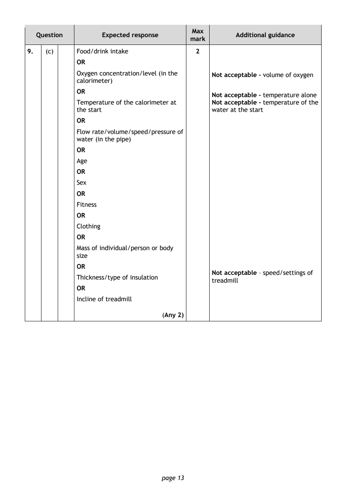
Selectable page text
Max
Question Expected response Additional guidance
mark
9. (c) Food/drink intake 2
OR
Oxygen concentration/level (in the Not acceptable - volume of oxygen
calorimeter)
OR
Not acceptable - temperature alone
Temperature of the calorimeter at Not acceptable - temperature of the
the start water at the start
OR
Flow rate/volume/speed/pressure of
water (in the pipe)
OR
Age
OR
Sex
OR
Fitness
OR
Clothing
OR
Mass of individual/person or body
size
OR
Not acceptable – speed/settings of
Thickness/type of insulation
treadmill
OR
Incline of treadmill
(Any 2)
page 13PDF page 14
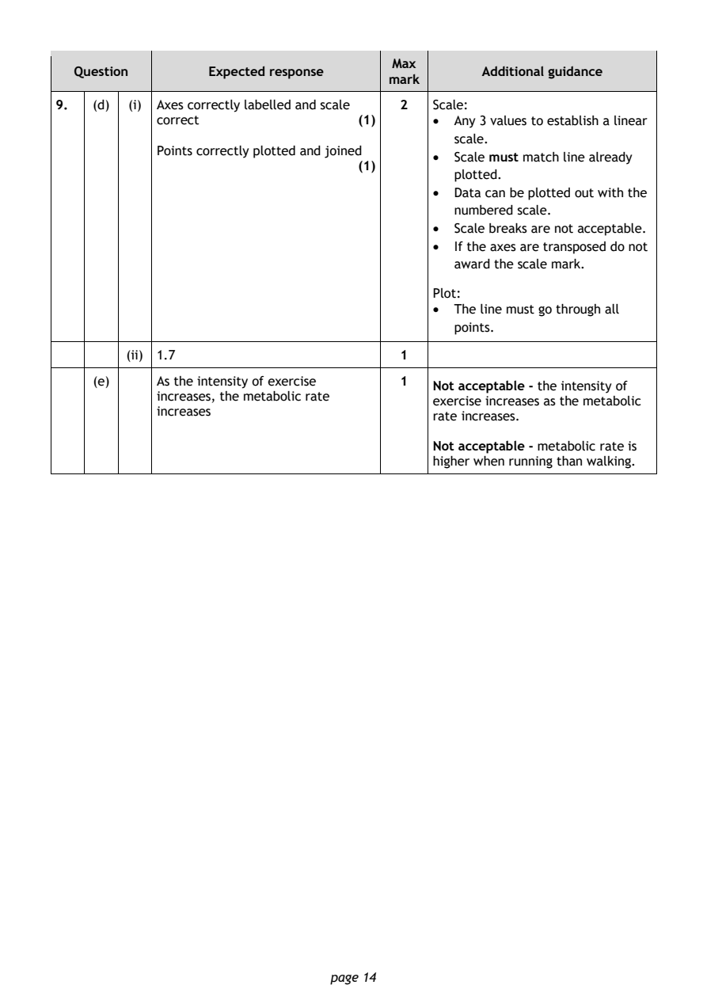
Selectable page text
Max
Question Expected response Additional guidance
mark
9. (d) (i) Axes correctly labelled and scale 2 Scale:
correct (1) • Any 3 values to establish a linear
scale.
Points correctly plotted and joined
• Scale must match line already
(1)
plotted.
• Data can be plotted out with the
numbered scale.
• Scale breaks are not acceptable.
• If the axes are transposed do not
award the scale mark.
Plot:
• The line must go through all
points.
(ii) 1.7 1
(e) As the intensity of exercise 1
Not acceptable - the intensity of
increases, the metabolic rate
exercise increases as the metabolic
increases
rate increases.
Not acceptable - metabolic rate is
higher when running than walking.
page 14PDF page 15
Paper 2, Question 10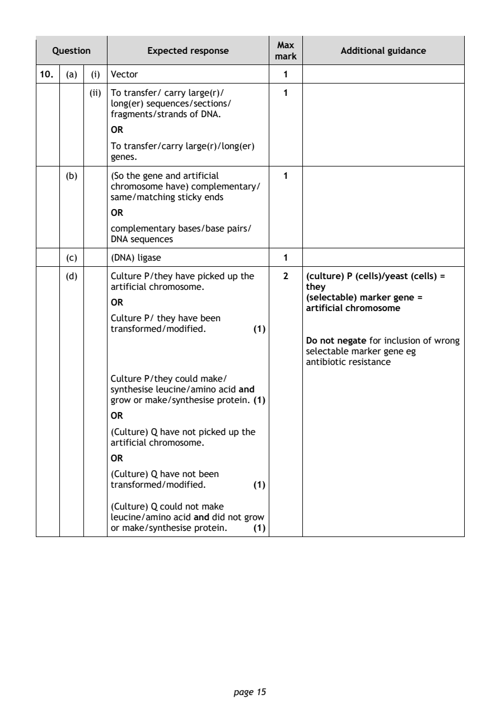
Selectable page text
Max
Question Expected response Additional guidance
mark
10. (a) (i) Vector 1
(ii) To transfer/ carry large(r)/ 1
long(er) sequences/sections/
fragments/strands of DNA.
OR
To transfer/carry large(r)/long(er)
genes.
(b) (So the gene and artificial 1
chromosome have) complementary/
same/matching sticky ends
OR
complementary bases/base pairs/
DNA sequences
(c) (DNA) ligase 1
(d) Culture P/they have picked up the 2 (culture) P (cells)/yeast (cells) =
artificial chromosome. they
(selectable) marker gene =
OR
artificial chromosome
Culture P/ they have been
transformed/modified. (1)
Do not negate for inclusion of wrong
selectable marker gene eg
antibiotic resistance
Culture P/they could make/
synthesise leucine/amino acid and
grow or make/synthesise protein. (1)
OR
(Culture) Q have not picked up the
artificial chromosome.
OR
(Culture) Q have not been
transformed/modified. (1)
(Culture) Q could not make
leucine/amino acid and did not grow
or make/synthesise protein. (1)
page 15PDF page 16
Paper 2, Question 11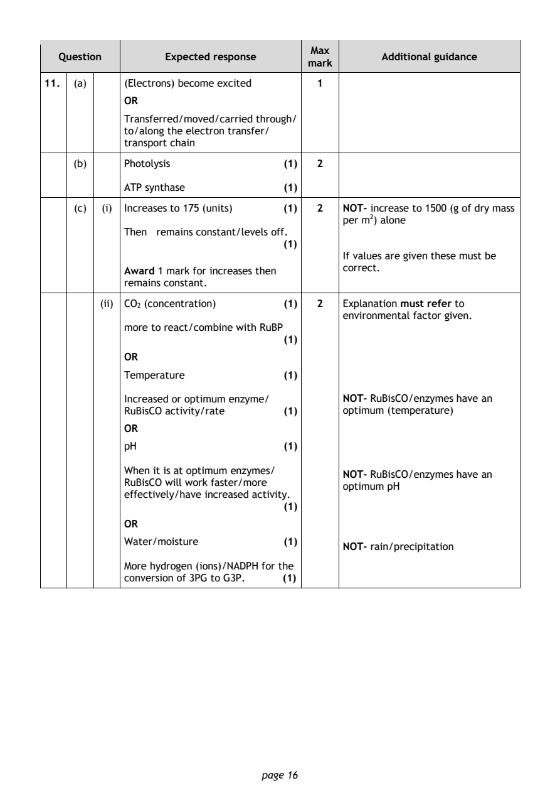
Selectable page text
Max
Question Expected response Additional guidance
mark
11. (a) (Electrons) become excited 1
OR
Transferred/moved/carried through/
to/along the electron transfer/
transport chain
(b) Photolysis (1) 2
ATP synthase (1)
(c) (i) Increases to 175 (units) (1) 2 NOT- increase to 1500 (g of dry mass
per m²) alone
Then remains constant/levels off.
(1)
If values are given these must be
correct.
Award 1 mark for increases then
remains constant.
(ii) CO (concentration) (1) 2 Explanation must refer to
2
environmental factor given.
more to react/combine with RuBP
(1)
OR
Temperature (1)
Increased or optimum enzyme/ NOT- RuBisCO/enzymes have an
RuBisCO activity/rate (1) optimum (temperature)
OR
pH (1)
When it is at optimum enzymes/
NOT- RuBisCO/enzymes have an
RuBisCO will work faster/more
optimum pH
effectively/have increased activity.
(1)
OR
Water/moisture (1)
NOT- rain/precipitation
More hydrogen (ions)/NADPH for the
conversion of 3PG to G3P. (1)
page 16PDF page 17
Paper 2, Question 12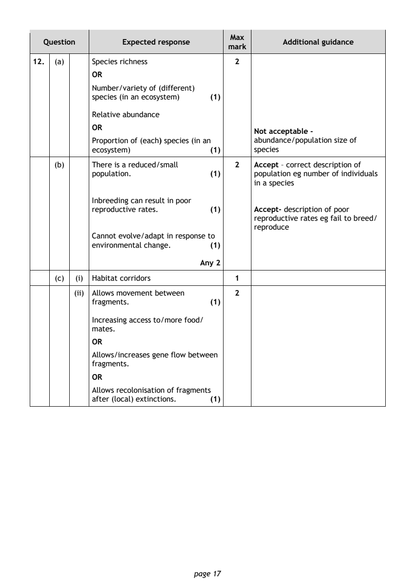
Selectable page text
Max
Question Expected response Additional guidance
mark
12. (a) Species richness 2
OR
Number/variety of (different)
species (in an ecosystem) (1)
Relative abundance
OR
Not acceptable -
Proportion of (each) species (in an abundance/population size of
ecosystem) (1) species
(b) There is a reduced/small 2 Accept – correct description of
population. (1) population eg number of individuals
in a species
Inbreeding can result in poor
reproductive rates. (1) Accept- description of poor
reproductive rates eg fail to breed/
reproduce
Cannot evolve/adapt in response to
environmental change. (1)
Any 2
(c) (i) Habitat corridors 1
(ii) Allows movement between 2
fragments. (1)
Increasing access to/more food/
mates.
OR
Allows/increases gene flow between
fragments.
OR
Allows recolonisation of fragments
after (local) extinctions. (1)
page 17PDF page 18
Paper 2, Question 13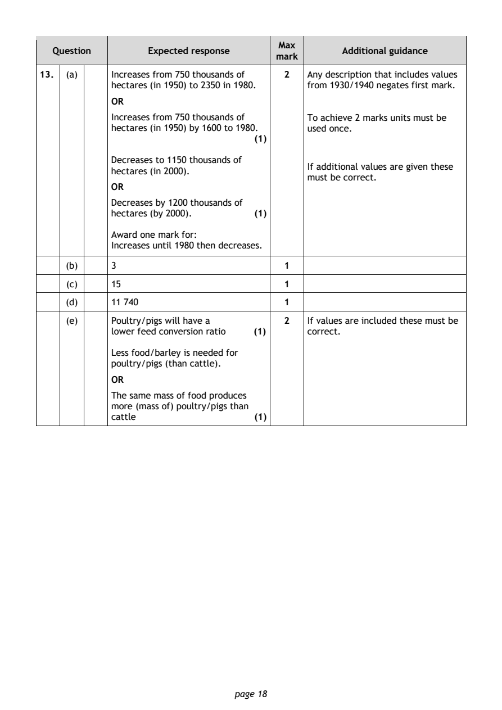
Selectable page text
Max
Question Expected response Additional guidance
mark
13. (a) Increases from 750 thousands of 2 Any description that includes values
hectares (in 1950) to 2350 in 1980. from 1930/1940 negates first mark.
OR
Increases from 750 thousands of To achieve 2 marks units must be
hectares (in 1950) by 1600 to 1980. used once.
(1)
Decreases to 1150 thousands of
If additional values are given these
hectares (in 2000).
must be correct.
OR
Decreases by 1200 thousands of
hectares (by 2000). (1)
Award one mark for:
Increases until 1980 then decreases.
(b) 3 1
(c) 15 1
(d) 11 740 1
(e) Poultry/pigs will have a 2 If values are included these must be
lower feed conversion ratio (1) correct.
Less food/barley is needed for
poultry/pigs (than cattle).
OR
The same mass of food produces
more (mass of) poultry/pigs than
cattle (1)
page 18PDF page 19
Paper 2, Question 14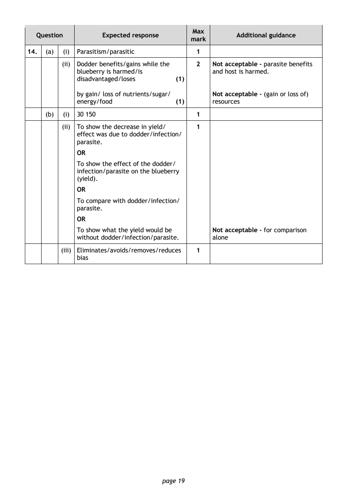
Selectable page text
Max
Question Expected response Additional guidance
mark
14. (a) (i) Parasitism/parasitic 1
(ii) Dodder benefits/gains while the 2 Not acceptable - parasite benefits
blueberry is harmed/is and host is harmed.
disadvantaged/loses (1)
by gain/ loss of nutrients/sugar/ Not acceptable - (gain or loss of)
energy/food (1) resources
(b) (i) 30 150 1
(ii) To show the decrease in yield/ 1
effect was due to dodder/infection/
parasite.
OR
To show the effect of the dodder/
infection/parasite on the blueberry
(yield).
OR
To compare with dodder/infection/
parasite.
OR
To show what the yield would be Not acceptable - for comparison
without dodder/infection/parasite. alone
(iii) Eliminates/avoids/removes/reduces 1
bias
page 19PDF page 20
Paper 2, Question 15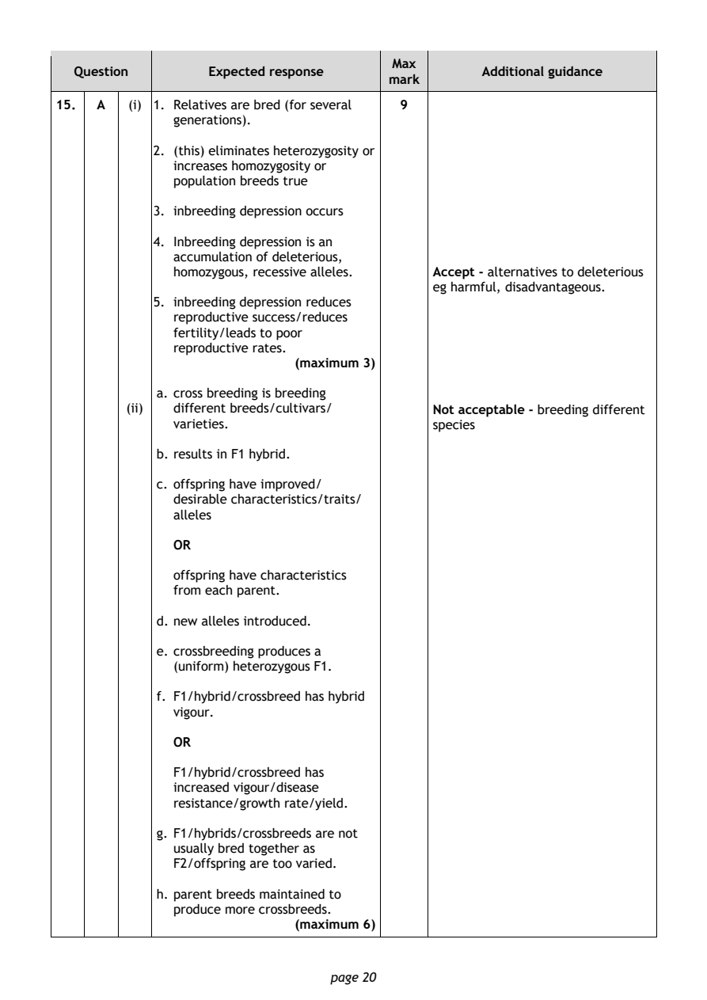
Selectable page text
Max
Question Expected response Additional guidance
mark
15. A (i) 1. Relatives are bred (for several 9
generations).
2. (this) eliminates heterozygosity or
increases homozygosity or
population breeds true
3. inbreeding depression occurs
4. Inbreeding depression is an
accumulation of deleterious,
homozygous, recessive alleles. Accept - alternatives to deleterious
eg harmful, disadvantageous.
5. inbreeding depression reduces
reproductive success/reduces
fertility/leads to poor
reproductive rates.
(maximum 3)
a. cross breeding is breeding
(ii) different breeds/cultivars/ Not acceptable - breeding different
varieties. species
b. results in F1 hybrid.
c. offspring have improved/
desirable characteristics/traits/
alleles
OR
offspring have characteristics
from each parent.
d. new alleles introduced.
e. crossbreeding produces a
(uniform) heterozygous F1.
f. F1/hybrid/crossbreed has hybrid
vigour.
OR
F1/hybrid/crossbreed has
increased vigour/disease
resistance/growth rate/yield.
g. F1/hybrids/crossbreeds are not
usually bred together as
F2/offspring are too varied.
h. parent breeds maintained to
produce more crossbreeds.
(maximum 6)
page 20PDF page 21
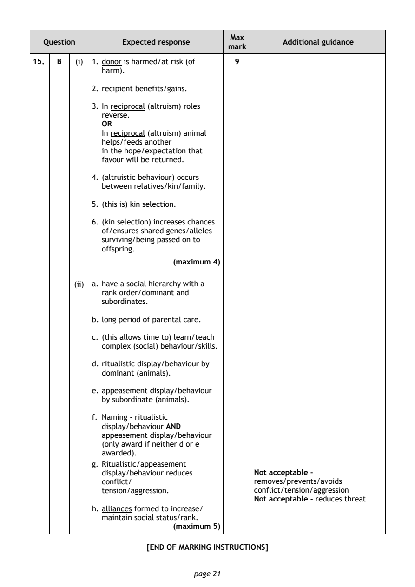
Selectable page text
Max
Question Expected response Additional guidance
mark
15. B (i) 1. donor is harmed/at risk (of 9
harm).
2. recipient benefits/gains.
3. In reciprocal (altruism) roles
reverse.
OR
In reciprocal (altruism) animal
helps/feeds another
in the hope/expectation that
favour will be returned.
4. (altruistic behaviour) occurs
between relatives/kin/family.
5. (this is) kin selection.
6. (kin selection) increases chances
of/ensures shared genes/alleles
surviving/being passed on to
offspring.
(maximum 4)
(ii) a. have a social hierarchy with a
rank order/dominant and
subordinates.
b. long period of parental care.
c. (this allows time to) learn/teach
complex (social) behaviour/skills.
d. ritualistic display/behaviour by
dominant (animals).
e. appeasement display/behaviour
by subordinate (animals).
f. Naming - ritualistic
display/behaviour AND
appeasement display/behaviour
(only award if neither d or e
awarded).
g. Ritualistic/appeasement
display/behaviour reduces Not acceptable -
conflict/ removes/prevents/avoids
tension/aggression. conflict/tension/aggression
Not acceptable - reduces threat
h. alliances formed to increase/
maintain social status/rank.
(maximum 5)
[END OF MARKING INSTRUCTIONS]
page 21